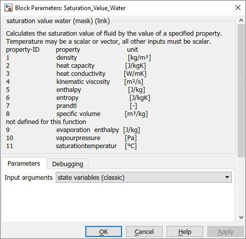
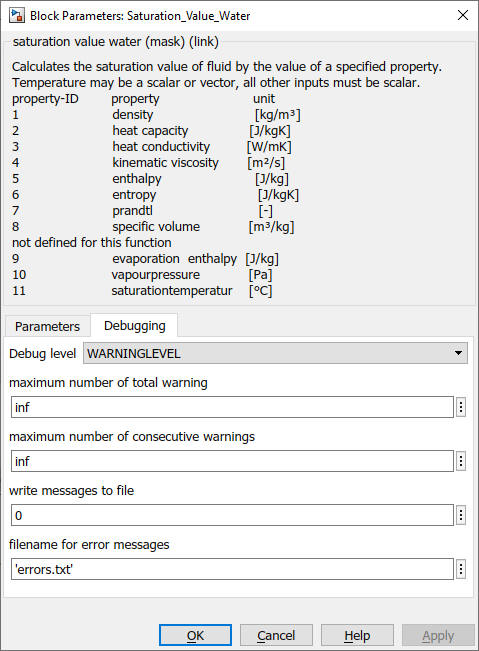

Saturation_Value_Water
Path: CARNOT/Basic/Material_Properties
Purpose:
Block for the calculation of the saturation properties for water.
Description:
The block returns the saturation properties for water. The desired values can
be chosen from a check box in the mask. A vector for the value of boiling fluid
and saturated steam is returned.
The block calls up the function satuprop in the CARNOT
Carlib Library where the calculation is carried out.
Input:
| T | : | temperature (scalar or vector) in °C |
| p | : | pressure in Pa |
| Fluid_Type | : | see definition of CARNOT fluid types |
| Fluid_Mix | : | see definition of CARNOT fluid mixtures |
| property_id | : | identifier of the property, see below |
Output:
| saturation_vapour | : | property value in vapourous phase |
| saturation_liquid | : | property value in liquid phase |
Defintion of the property identifier
| property_id | property | unit |
| 1 | density | kg/m3 |
| 2 | heat capacity | J/kg/K |
| 3 | thermal conductivity | W/m/K |
| 4 | kinematic viscosity | m2/s |
| 5 | enthalpy | J/kg |
| 6 | entropy | J/kg/K |
| 7 | prandtl | - |
| 8 | specific volume | m3/kg |
Parameters and Dialog Box:

You can choose the inputs to be the :

Use the GlobalMessageLevel block to handle the debugging messages.
Examples:
Open the example explorer from the Matlab command window
ExampleBrowser
or load the examples via the CARNOT library.
NOTE:
The saturation_property block is only available for water.
Characteristics:
| Direct Feedthrough | : | Yes |
| Sample Time | : | Inherited from driving block |
| Vectorized | : | No |
Parameters and Dialog Box
You can choose the inputs to be the :
Use the GlobalMessageLevel block to handle the debugging messages.
Characteristics
Direct Feedthrough Yes
Sample
time
Inherited
from driving block
States
corresponding
to the number of nodes
Vectorized
No